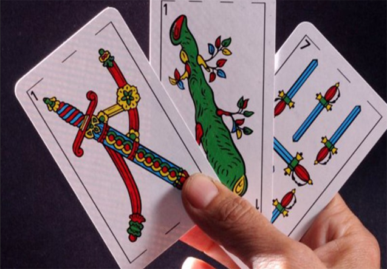
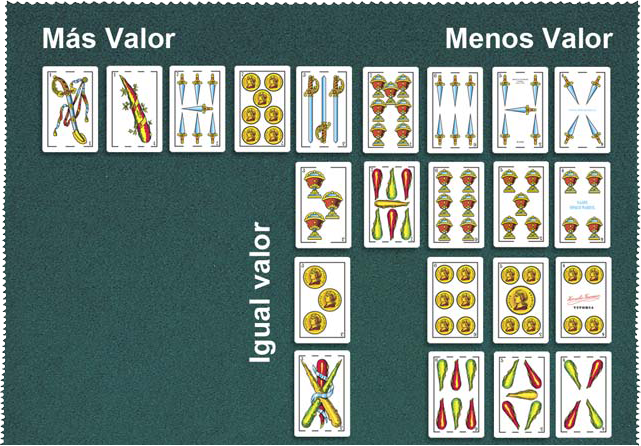
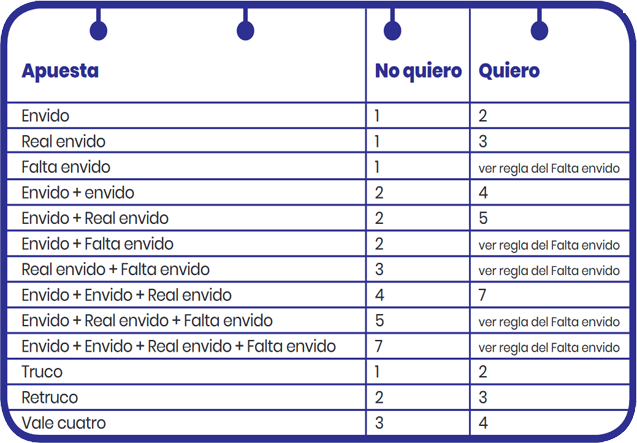
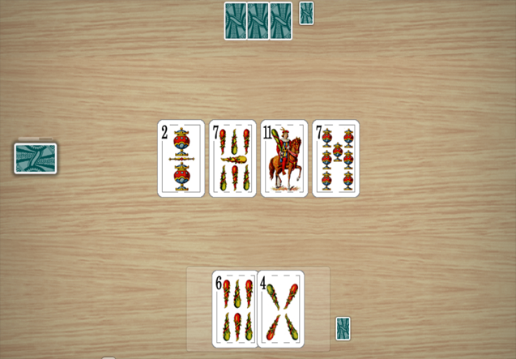
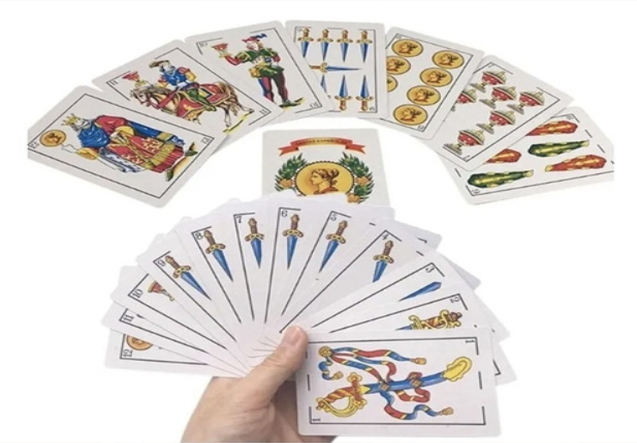

Truco

Reglamento de juego
Se trata de un juego de baraja española de 40 cartas . Al truco puede jugarse entre dos, cuatro,
seis(por equipos en estos dós últimos casos).Las dos parejas competirán entre sí situándose en torno a una mesa de juego, en la cual los integrantes de cada pareja se ubicarán de
forma alternada. El objetivo general del juego es ganar el número de chicos (juegos
parciales) pactado al comienzo de la partida. Lo más habitual es que
una partida se juegue hasta que una de las parejas gane dos chicos.
Cada chico consta a su vez de 30 tantos, que deberá ir sumando
cada pareja a lo largo de varias manos.En cada mano quien reparte dará a cortar la baraja al oponente de su izquierda y repartirá tres a cada participante, de una en una y en sentido antihorario. Quien se sitúa a su derecha es quien tiene la mano.
Valores de cartas

¿Cómo sumar puntos?
Hay dos instancias en las que se puede apostar: el envido y el truco. Cada una tiene su
propio puntaje.

Empieza el juego
Cada jugador recibe 3 cartas. Las rondas se juegan de a una carta por turno. En cada ronda, el jugador o equipo que haya jugado la carta más alta gana la ronda. La partida continúa hasta que un jugador o equipo gane dos de las tres ronda.
Fases del juego
Envido : los ultimos jugadores de la primera ronda podran decir Envido, otra persona podra reaccionar diciendo quiero, real envido o vale cuatro. Consiste en sumar el valor de las dos cartas del mismo palo más alto que tengas. Las figuras valen 0 y el resto su número. Quien tenga la mayor suma gana los puntos apostados.
Truco : En cualquier momento un jugador puede "cantar Truco", lo que aumenta los puntos en juego. El oponente puede aceptar (y la mano continúa con más puntos en juego) o rechazar (y el que cantó Truco gana los puntos ya acumulados). También se puede "Re-Trucar" y "Vale Cuatro" para seguir aumentando la apuesta.
Ejemplo simplificado
Reparten tres cartas a cada jugador.
Uno de los jugadores canta Envido. El otro acepta, y el que tiene más puntos en el Envido se lleva la apuesta.
Luego, uno de los jugadores puede canta truco o no. Si el otro acepta, juegan las cartas y el que gane la mayoría de las tres ronda se lleva los puntos.
Escoba del 15

Preparación del juego
Para comenzar, mezclá las cartas y repartí tres a cada participante. Luego,
colocá cuatro cartas boca arriba en el centro de la mesa. Estas cartas se
llaman "la mesa" y durante el juego, cada participante tratará de capturarlas
en su turno.
Cómo sumar puntos
l objetivo de La Escoba de 15 es acumular la mayor cantidad de puntos
posible. Los jugadores obtienen puntos capturando cartas de la mesa y
sumando el valor de las mismas. Al final del juego, se realiza un recuento de
puntos y el jugador con más puntos es el ganador.
Acciones por turno
Durante tu turno, tendrás la opción de capturar una o varias cartas de la
mesa que sumen 15 puntos. Si no podés hacerlo, tenés que jugar una de tus
cartas en la mesa. Si lográs capturar todas las cartas de la mesa en un solo
turno conseguís una "escoba" y recibirás puntos adicionales.
Puntos
Al finalizar la partida, se otorgan puntos de acuerdo a las cartas obtenidas y algunas reglas adicionales:
Escobas: Cada "escoba" vale 1 punto.
Cartas: El jugador que tenga más cartas al final de la partida recibe 1 punto.
Oros: El jugador que haya recolectado más cartas de oros obtiene 1 punto.
Siete de oros ("El Siete de Oro"): Si tienes esta carta, ganas 1 punto adicional.
Sietes: El jugador con más sietes gana 1 punto (esto incluye los sietes de cualquier palo).
Ejemplo Simplificado:
Se reparten 3 cartas a cada jugador y se colocan 4 cartas boca arriba en la mesa, al repartirse se muestra que hay 3 de bastos, 5 de copas, 7 de espadas, y 2 de oros. El primer jugador tiene un 5 de bastos y lo juega. Suma su 5 con el 5 de copas de la mesa (5+5=10), pero no logra sumar 15, por lo que deja su carta sobre la mesa. El segundo jugador tiene un 8 de oros. Lo juega y suma su 8 con el 7 de espadas (8+7=15). Se lleva ambas cartas y hace una "escoba". El juego continúa hasta que se juegan todas las cartas del mazo.
Chinchón

Objetivo del juego
El objetivo del Chinchón es formar grupos de cartas que sigan una secuencia o que sean del mismo valor, e intentar reducir al máximo los puntos que te quedan en la mano. El jugador que logre hacer un "Chinchón" (una secuencia de siete cartas consecutivas del mismo palo) gana inmediatamente la partida.
Reglas Basicas
Jugadores:El Chinchón puede jugarse con 2 a 6 jugadores. Cartas y Valoración:Se juega con una baraja española de 40 cartas. Las cartas tienen los siguientes valores Del 1 al 7, el valor de la carta es su número. Las figuras (10, 11 y 12) valen 10 puntos cada una. Reparto:Cada jugador recibe 7 cartas. Se coloca una carta boca arriba en el centro, que será el inicio del descarte, y el resto de las cartas se dejan en un mazo boca abajo. Formación de combinacionesEscaleras o secuencias: Tres o más cartas consecutivas del mismo palo (ej: 5, 6, 7 de copas). Grupos de cartas del mismo número: Tres o más cartas del mismo número pero de diferentes palos (ej: 3 de oros, 3 de copas, 3 de espadas).
Desarrollo del juego
En cada turno, los jugadores deben:
Robar una carta del mazo boca abajo o del montón de descarte.
Descartar una carta en el montón de descarte (tras robar, el jugador se queda con 7 cartas).
El juego continúa por turnos hasta que un jugador "cierra" la partida.
Puntaje
Cuando un jugador cierra, los demás jugadores muestran sus cartas, y aquellas que no forman parte de combinaciones suman puntos. El objetivo es sumar la menor cantidad de puntos posible.
Los jugadores anotan sus puntos en cada mano. El juego continúa hasta que un jugador alcanza o supera un límite de puntos predefinido (por ejemplo, 100 puntos). En ese momento, los demás jugadores pueden seguir jugando para evitar la eliminación.
Ejemplo simplificado
Inicio: Se reparten 7 cartas a cada jugador. El resto de la baraja se coloca en un mazo boca abajo, y se voltea la primera carta para empezar el montón de descarte.
Primer turno: El jugador roba una carta, puede tomarla del mazo o del montón de descarte. Luego decide si forma alguna combinación o descarta una carta en el montón de descarte.
Desarrollo: Cada jugador sigue robando y descartando cartas hasta que uno de ellos decide cerrar.
Puntaje: Tras cerrar, todos los jugadores muestran sus cartas y suman los puntos de las cartas que no formaron combinaciones. Se anotan los puntos, y la partida continúa hasta que alguien alcanza el límite de puntos (100, por ejemplo).
Chinchón: Si un jugador logra formar una escalera de siete cartas consecutivas del mismo palo, gana el juego de manera instantánea.